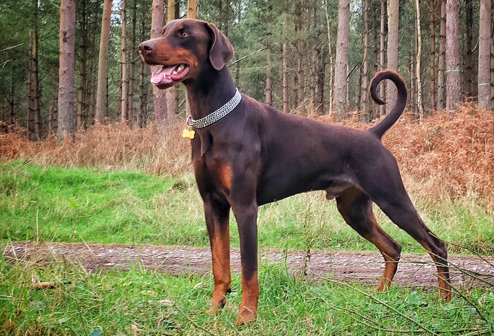

DOBERMAN
Weight:
65-90 lbs.
Height :
24 - 26 in.
26 - 28 in.
Length:
Short .
Color:
Black, red, blue, fawn (all with tan markings).
Longevity:
10 – 12 yrs.
Doberman personality
Doberman pinschers are considered people-oriented dogs that are affectionate and sweet with people, if socialized and trained properly. They are loyal to their owners and are good with children if raised with them however, some Dobermans bond only to one person.
What to expect
Doberman pinschers are powerful, energetic dogs that need lots of exercise. If they are not exercised, they are more likely to become irritable or even aggressive. They can adjust well to apartment living if exercised daily.Careful socialization and obedience training from a young age are essential for this breed. Doberman pinschers respond very well to positive reinforcement.No special guard training is needed for anyone who wants a good family protector. In fact, Doberman pinscher experts often advise against special guard training, which could result in over-guarding and aggression.
History of the Doberman
A German named Louis Dobermann is credited with developing the Doberman pinscher breed in the late 1800s. He was a tax collector and wanted a fierce guard dog to accompany him on his rounds. Dobermann also kept the local dog pound, where he had access to many strays.No one knows for certain, but Dobermann is thought to have crossed many breeds to get the Doberman pinscher. Some of the breeds thought to be involved include the rottweiler, German pinscher, Great Dane, German shepherd dog, Manchester terrier, and English greyhound shorthaired shepherd.Although initially bred and still used worldwide as guard dogs, Doberman pinschers also have been police and military dogs, rescue dogs and therapy dogs.